SAFE Pods
In an effort to decentralise knowledge and development of the underlying code, MaidSafe is encouraging technical community organisers to test the waters for developer interest in their local areas. Safe Pods will be hubs of innovation that focus on building and expanding the Safe network infrastructure and ecosystem. They should provide clear benefit to members and facilitate a collaborative, open and inclusive environment. In addition to core development, these locations should provide support for those looking to work with the API and facilitate outreach for new developers. The MaidSafe HQ in Troon will eventually be one of many locations where core and application development is happening which alleviates centralised control of updates, bug fixes and developer support.
With a portion of the crowd sale income, MaidSafe is helping to bootstrap a handful of promising communities so they have an opportunity to start organising meetings sooner and have time for planning ways to become self sustainable. As the funding makes the pods temporarily dependent on MaidSafe, it is important for organisers to eventually implement a system for alternative income so that they can become self sustaining. Once the Safe network is live, both core developers and app builders will have the opportunity to earn safecoin based on the commits they've made to the core and the usefulness of their applications. This situation opens up one potential self-sustaining situation where a portion of that income goes towards maintaining these communities through memberships. We hope to iterate on other methods for the Safe pods to consider for alternative income and welcome additional ideas.
The first step for an interested technical community organiser should be to start a meet up group and spread the word. Hackerspaces and co-working spaces can serve as both great options for venues to host meetings and also for outreach to the communities already there. If there seems to be a good amount of developer interest then feel free to contact us for potential bootstrapping assistance. If there are any questions or feedback regarding Safe pods, please post your thoughts in the community forum.